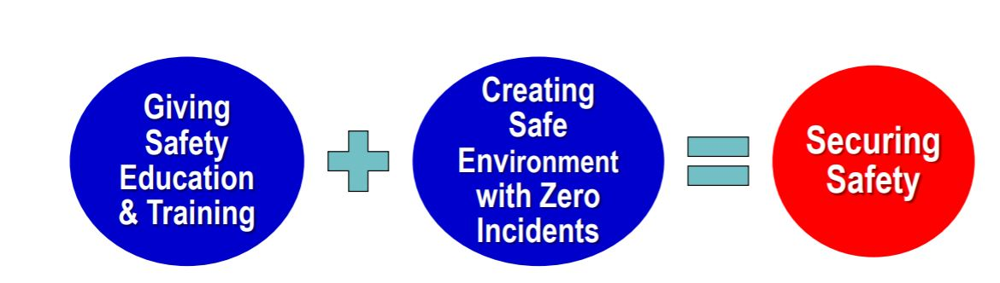
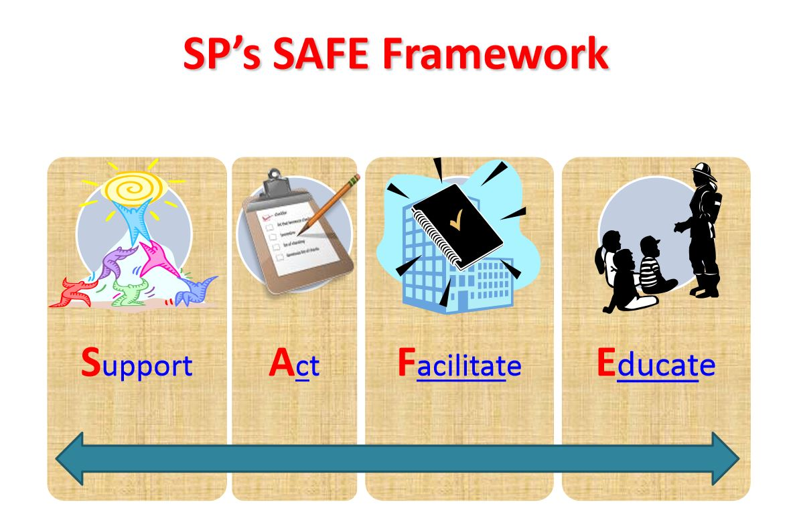
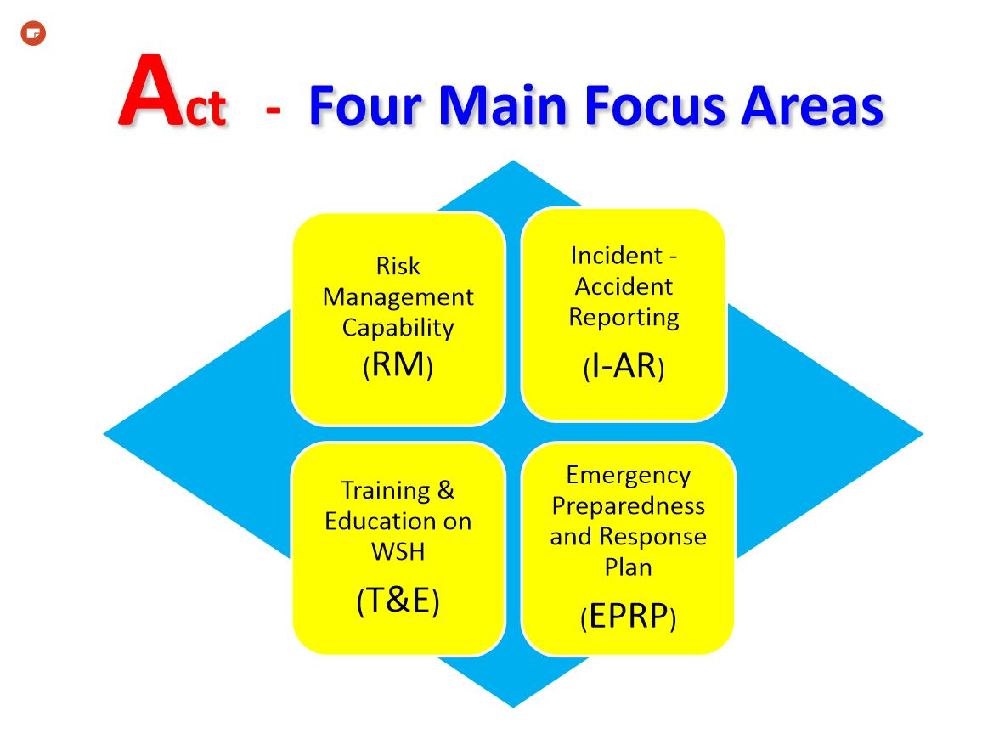

Week 01: Fablab Safety
Intro to Fablab Safety
Summary of Intro to Fablab Safety Document:
Fablab Safety is important! But how is it maintained?
SP ensures that safety is secured by

Setting Rules for Safety Management, which are:
Compulsory Safety Instructions & Certification Program for all Students.
Safety Infrastructure to be visible on shop floor of workshops.
Safety Patrol
Compulsory Housekeeping by students after using the machines.
But what is the Workshop Safety and Certification Program?
Its objective is to:
help students understand WSH regulations in SP and the safe Practises in Fab Lab/workshops,
and help familiarise students with the safety infrastructure in Fablab/Workshops and to know the various Machine Hazards.
In order to attain the Certification, students must attend lessons before sitting for an assessment to be able to use the FabLab.
Failures for the assessment must resit the assesment.*
But why must students attend this Workshop?
Singapore Polytechnic has a legal responsibility under the Workplace Safety and Health (WSH) Act 2006 to ensure a safe working environment.
To ensure that all students are given appropriate safety and health training related to their field of study.

SP's SAFE Framework needs the students to know how to act and what to do in the case of accidents, which will be taught in the workshop.

General Safety Instructions
Emergency Procedures
In the event of emergencies, assistance may be summoned using the following helplines:
For Ambulances and SCDF: Call 995
For Police: Call 999
For all emergencies and incident reporting: Call SP Emergency Hotline 6772-1234
When making an emergency call, it is important to give precise information such as:
Name of Caller
Location(Block and Room Number)
Nature of emergency(e.g. Fire, Explosion, Violent Behaviour, etc)
Back to Index
Copyright © 2020 Dean Tan